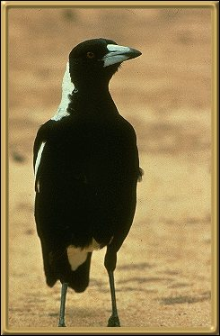

I once had a semi-tame
Magpie. During a very bad drought a lot of the young birds are left to fend for
themselves. This particular one I hand fed with minced meat. After a time it became
totally independent but it used to come back to visit occasionally. They can be taught to
talk, but this involves splitting their tongues, and is quite cruel. They are a very
intelligent bird, and are found throughout Australia. One of our major football
teams, Collingwood, use their colors and are known as the Magpies.
Approx. 38-44cm (15-17 inches)
Photographer: unknown